Ambulancias
Traslados de urgencia y programados.
Atención prehospitalaria y ambulancias para Caborca y su región.

Somos parte de la Cruz Roja Mexicana, institución humanitaria que desde 1910 ayuda a las personas más vulnerables. En Caborca, voluntarios y personal técnico atienden emergencias en la ciudad, ejidos y la carretera federal 2.
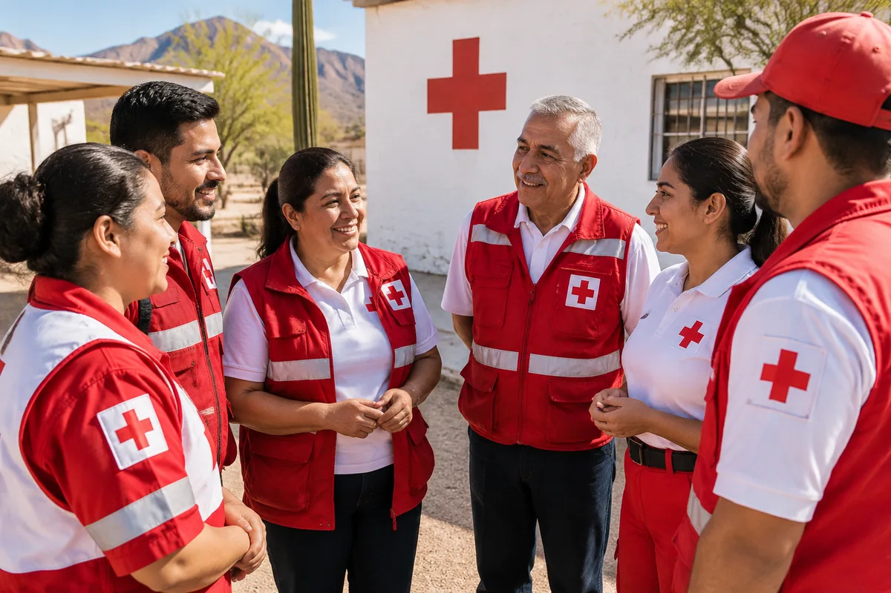

Traslados de urgencia y programados.
Paramédicos certificados.
Apoyo en accidentes y desastres.
Curaciones y toma de signos.
Aprende a actuar ante heridas, quemaduras, fracturas, atragantamiento y emergencias médicas comunes en el hogar o trabajo.
Capacitación práctica en reanimación cardiopulmonar para adultos, niños y lactantes, además del uso correcto del Desfibrilador Externo Automático.
Programas diseñados para brigadas internas de protección civil, cumpliendo con normativas de seguridad laboral en Caborca y la región.
Formación profesional teórico-práctica para integrarte a la atención prehospitalaria en ambulancias y servicios de emergencia.

Únete a Juventud, Socorros o Damas Voluntarias. No necesitas experiencia: te capacitamos.
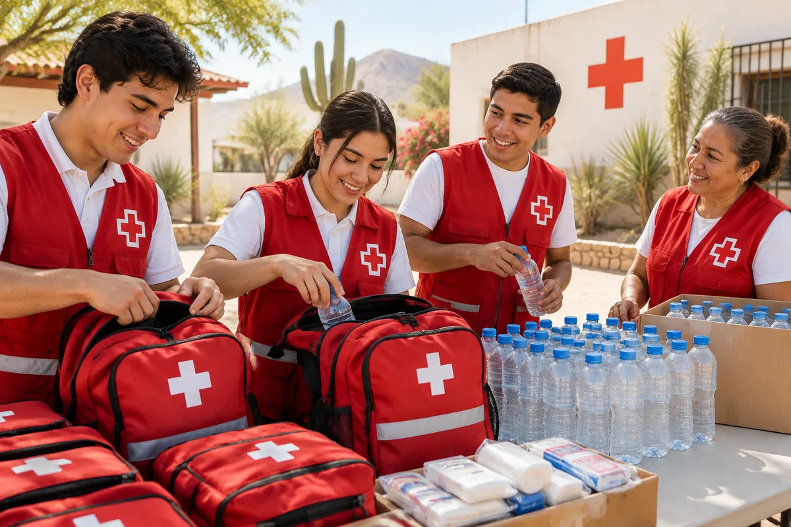
Tu donativo mantiene las ambulancias en la calle. Participa en la Colecta Anual o dona directamente en nuestra delegación.
Tus donativos se destinan a ambulancias, equipo médico, insumos y capacitación. Recibos deducibles disponibles a solicitud.


Paramédicos de la delegación refuerzan operativos de vigilancia y auxilio en la Carretera Federal 2.
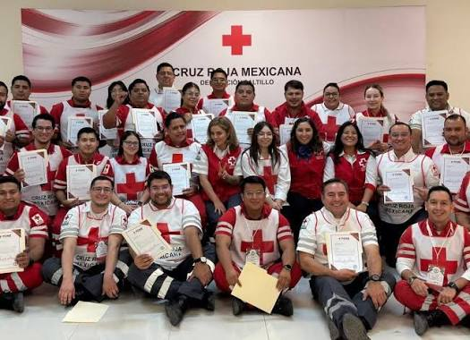
Jóvenes de Caborca concluyen su módulo inicial de primeros auxilios y atención prehospitalaria.
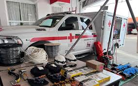
Gracias a los donativos de la comunidad, se renovó equipo médico esencial en nuestras ambulancias.
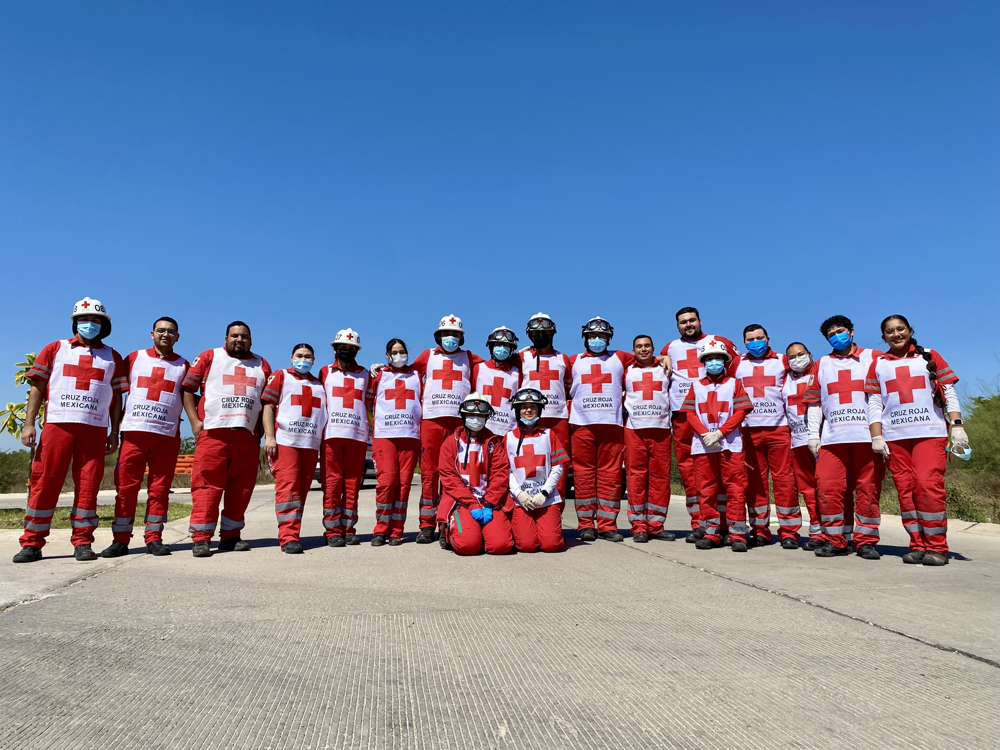
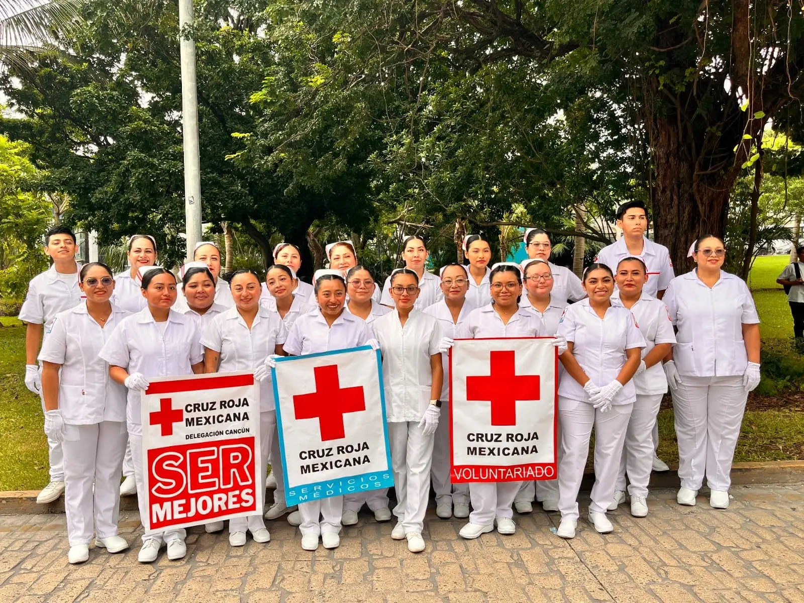
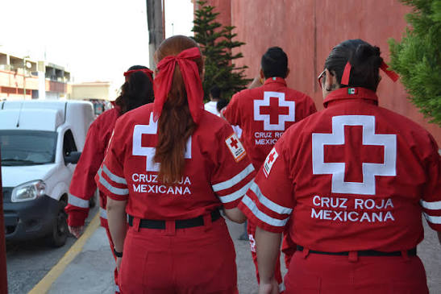
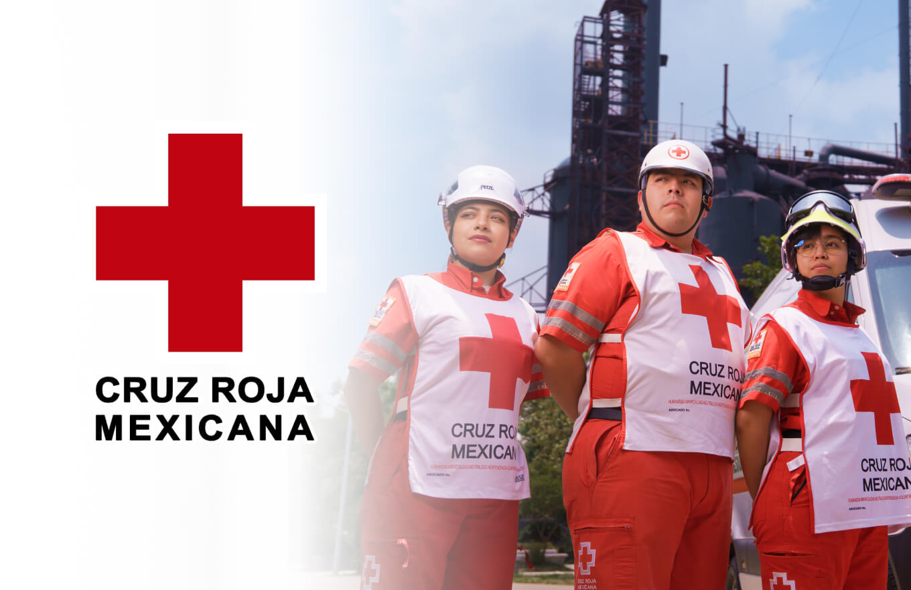
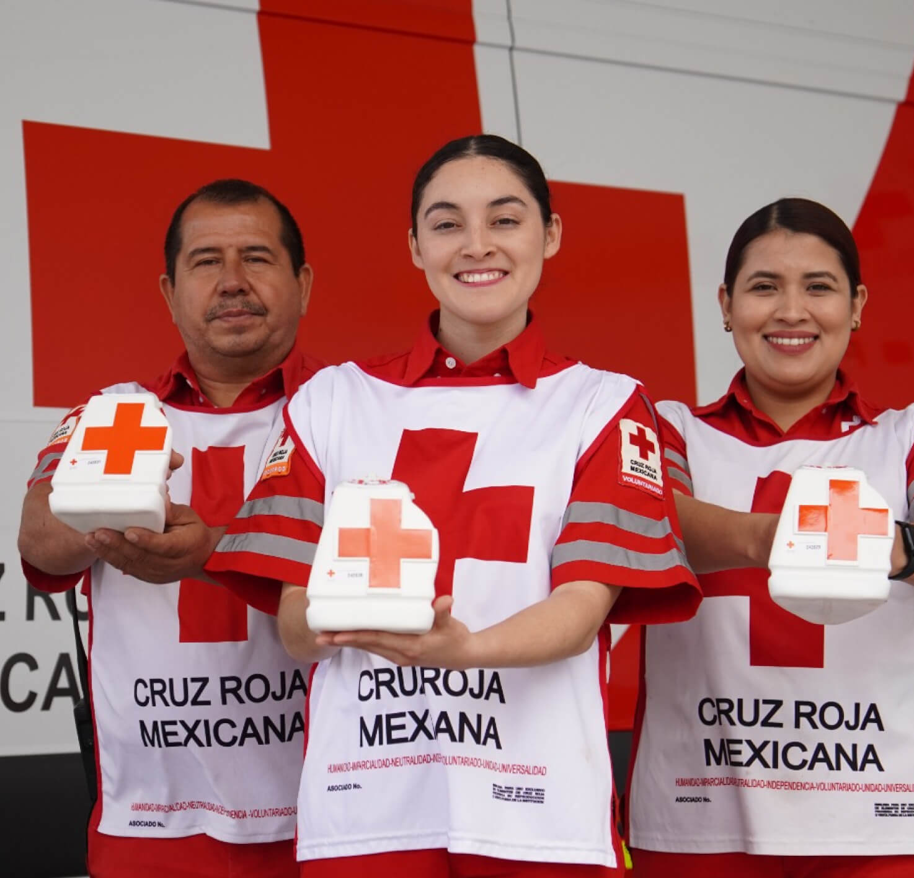
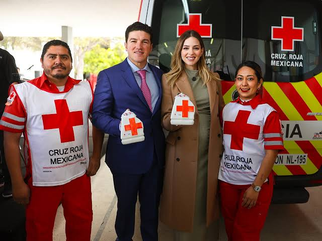
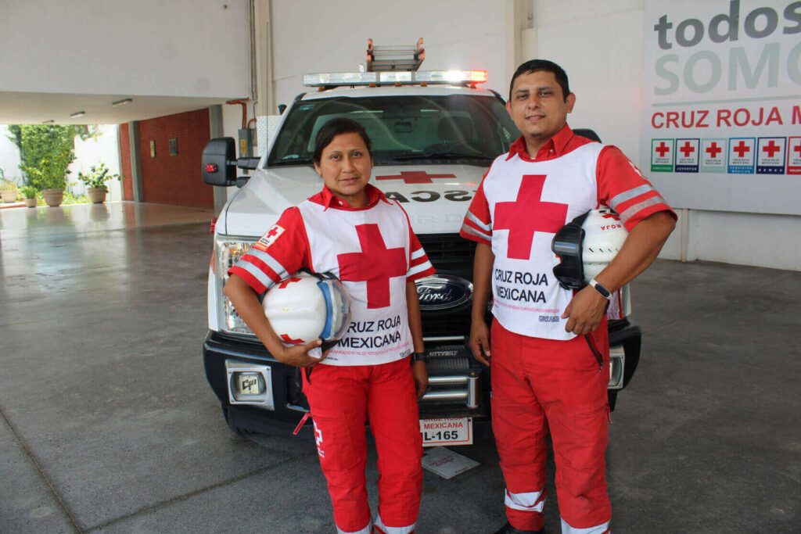
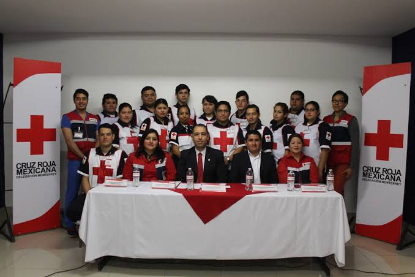
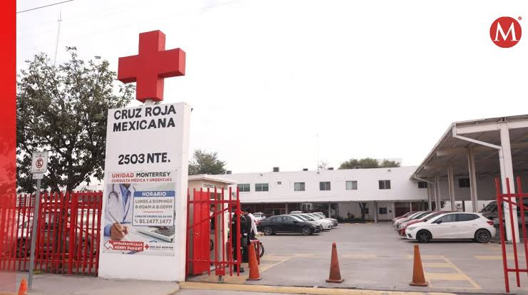
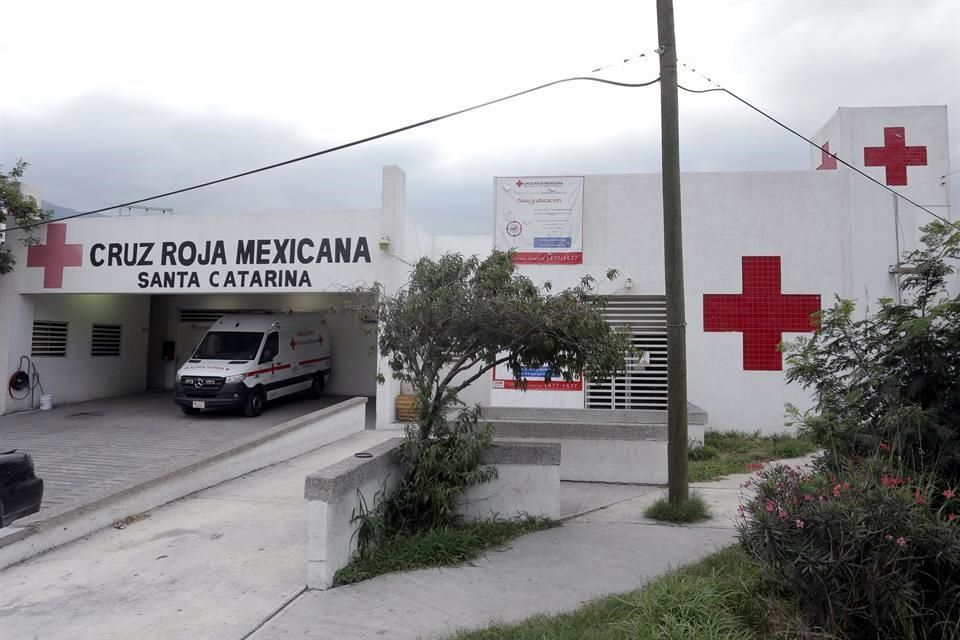
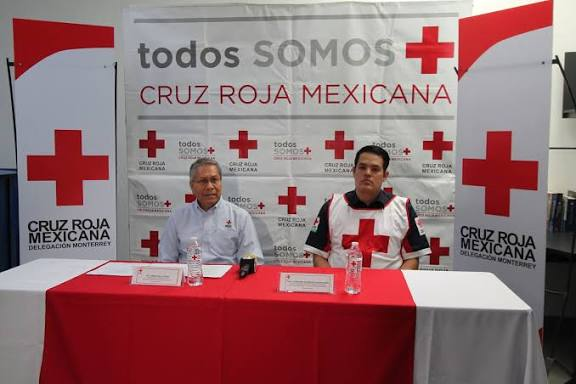
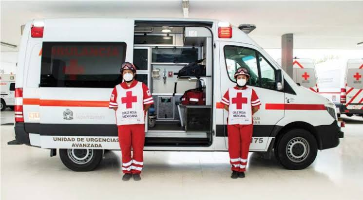
📍 Avenida K 50, Centro, 83600 Caborca, Sonora
🚨 Emergencias: 911
🏢 Administración: 637 372 1177
💬 WhatsApp: 637 372 1177
🕒 Emergencias 24/7 · Oficinas L–V 8:00–16:00